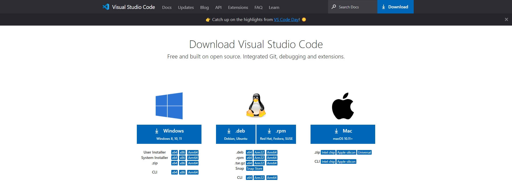
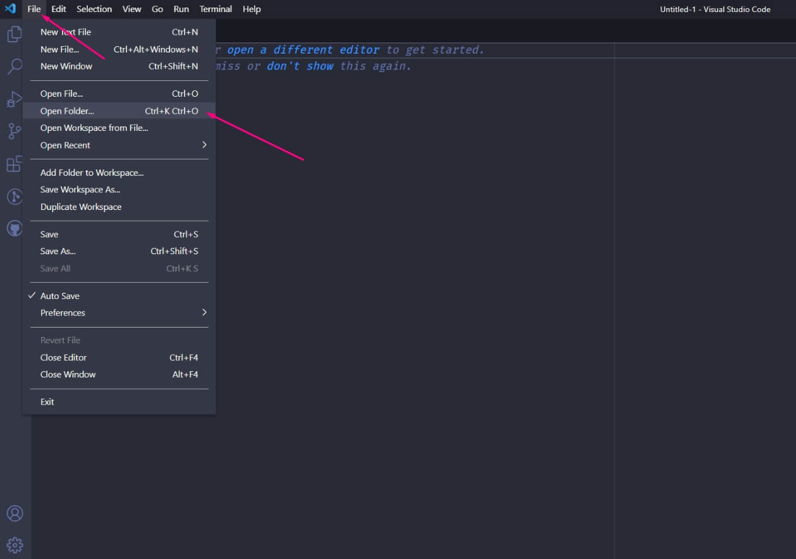
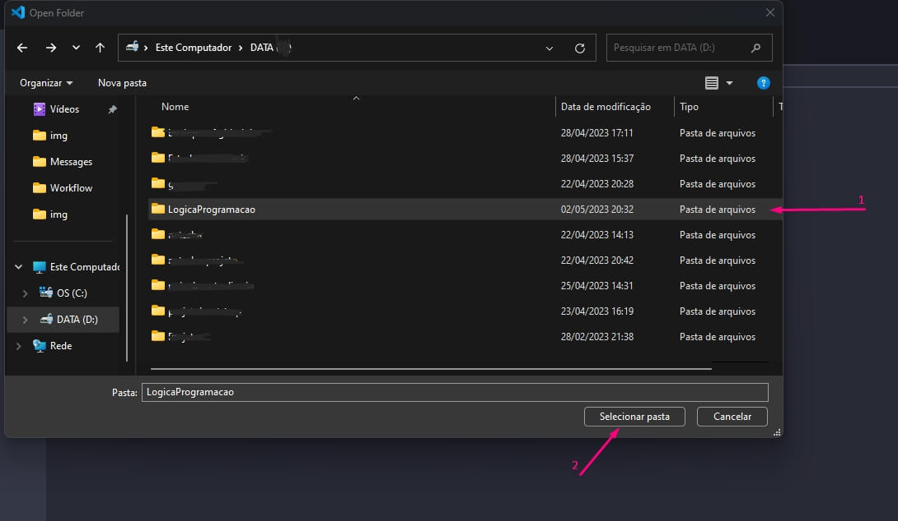
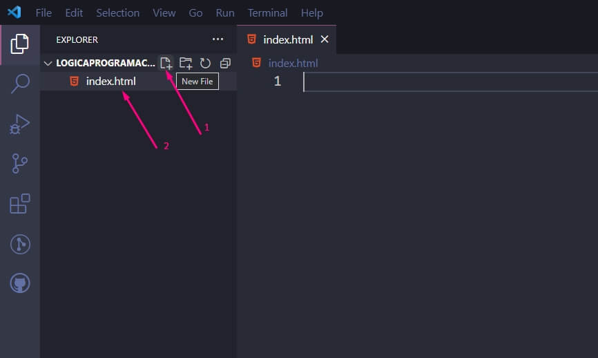
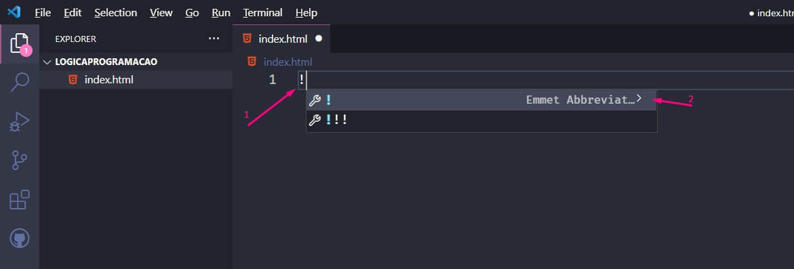
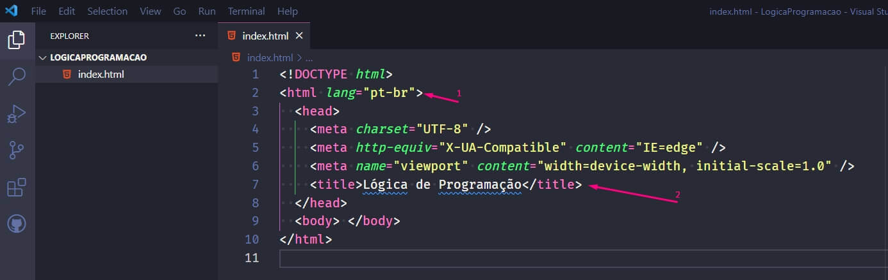
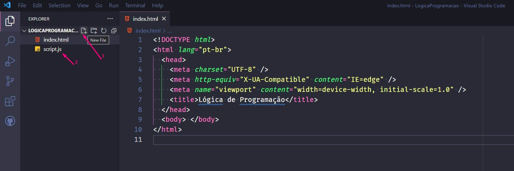
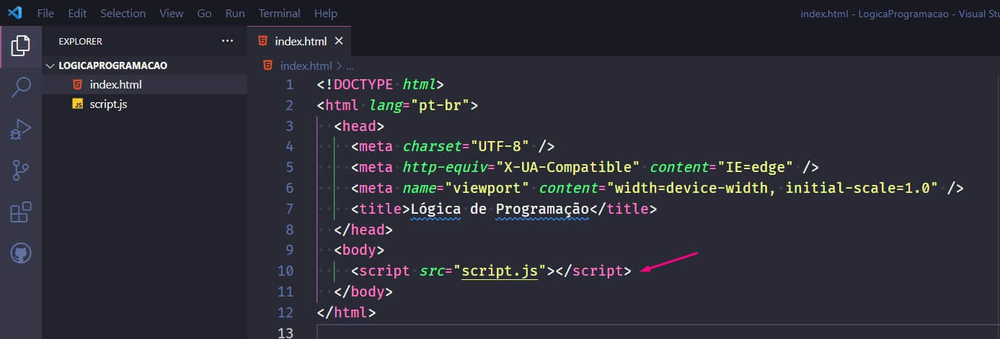
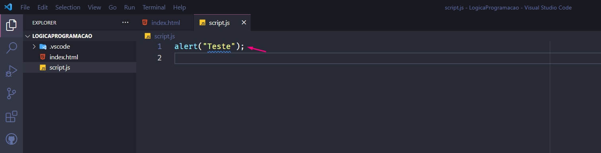

Lógica de Programação
Criado em: 02/05/2023
Lógica de programação é a técnica utilizada para definir a sequência de ações que um programa de computador deve seguir para realizar uma determinada tarefa. Ela envolve o uso de estruturas lógicas, como condicionais (if/else), laços de repetição (while/for/do while), e operadores lógicos, (AND/OR/NOT) para construir algoritmos que resolvem problemas computacionais.
Realize o download do Visual Studio Code no site https://code.visualstudio.com/download:

Realize a instalação padrão.
Crie uma pasta vazia no diretório que melhor desejar e após abra o Visual Studio Code e realize os passos abaixo para abrir a pasta criada:

Selecione a pasta que você criou:

Crie um arquivo HTML conforme abaixo, insira o nome index.html:

Inseria a tag exclamação (!) e após selecione a primeira opção para criar a estrutura base do HTML:

Preencha a tag lang com valor “pt-br” e altere a tag title para o valor desejado:

Crie um arquivo javascript com nome script.js:

Inseria a tag script dentro do body conforme abaixo:

No arquivo script.js crie um alert conforme abaixo para teste se o script está funcional com HTML para ser validado nos próximos passos:

"Alert" é um método em javaScript que permite exibir uma mensagem na forma de uma caixa de diálogo ao usuário em um navegador da web.
No seu diretório criado no computador clique sobre o arquivo index.html e será aberto no seu navegador, se tudo estiver configurado corretamente conforme os passos orientados anteriormente deverá apresentar o alert criado conforme abaixo:
Uma variável é um espaço de memória nomeado que é usado para armazenar um valor em um programa de computador.
Principais variáveis que vamos utilizar durante as etapas são:
- String: Utilizada para armazenamento de texto.
- Number: Utilizada para armazenamento de números inteiros e reais.
- Boolean: Utilizada para armazenamento um valor lógico de verdadeiro e falso.
- Array: Utilizada para criar e armazenamento de listas de dados.
- Object: Utilizada para criar e armazenamento de um objeto.
- Date: Utilizada para armazenamento de datas.